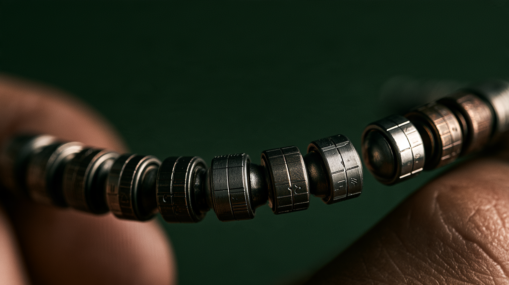
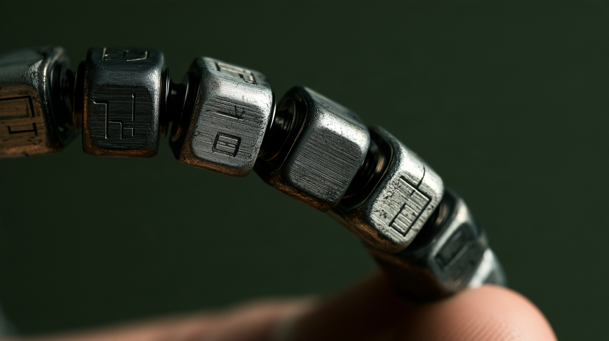

Abacus
The interface you don't have to look at.
The thesis
For decades, digital interfaces have worked to remove physical effort. Buttons became touchscreens. Knobs became sliders. Objects became pixels.
AI may make some physical effort useful again.
An object you wear or carry can be understood through touch and proprioception. Your hand can find it, orient it, rotate it, squeeze it, separate it or join it without your eyes ever leaving the world around you.
It can be intent.
Give the hand its own interface
A touchscreen feels essentially the same everywhere. To use it, we usually have to look.
Physical objects are different. Shape, position, texture, resistance and movement can all carry information. With familiarity, your fingers know where they are.
That suggests an interface for an intelligent agent that doesn't compete for visual attention. Something that can be manipulated in a pocket, beneath a table, while walking, during a conversation, or in darkness.
Your need to look at it does.
Resistance can mean something
A button has a threshold. A magnetic connection requires separation. A cube can rotate into a detent. Two pieces can snap together. A bead can advance one position.
Those tiny amounts of physical effort aren't necessarily inefficiencies. They establish a boundary between something you happened to do and something you meant to do.
For an intelligent agent capable of acting on our behalf, that distinction becomes increasingly important.

Abacus
Looking at strands of beads changed the idea. Repetition creates sequence. Different forms create landmarks. Position can persist. Moving forward and backward has meaning.
Then the name became obvious: Abacus.
One of humanity's earliest computational interfaces already had many of the qualities we were looking for: physical state, position, sequence, memory and manipulation through the hand.
Abacus imagines those principles without the frame. Wear it as a bracelet. Carry it as a strand. Move a module into a ring. Separate one piece. Join another. The configuration itself can carry information.

The model
These aren't proposed controls yet. They're a vocabulary for exploring what computation becomes when interaction moves away from a screen and back into the hand.
Not smart jewelry
The conventional approach starts with electronics and asks how to make them attractive enough to wear. This exploration starts somewhere else.
Humans have worn, carried, touched, counted, moved and held meaningful objects for thousands of years. They acquire familiarity, memory, wear and sometimes ritual.
Make technology behave like jewelry.
Something personal. Something tactile. Something you learn over time. Something that doesn't become useless when its screen turns off—because it never had one.
Hands establish intent.
Voice supplies meaning.
The question
The abacus was one of our earliest interfaces for computation.
Not because mechanical computing needs to return. Because intelligence may no longer require us to look at a computer.
A coda
We didn't begin by trying to design Abacus.
We began with a ring, then looked at jewelry. Jewelry suggested ritual. Ritual suggested touch. Touch led to proprioception. Proprioception led to physical verbs. Beads introduced sequence. Cubes introduced orientation.
Eventually the object began to explain itself.
Making them was part of finding the idea.